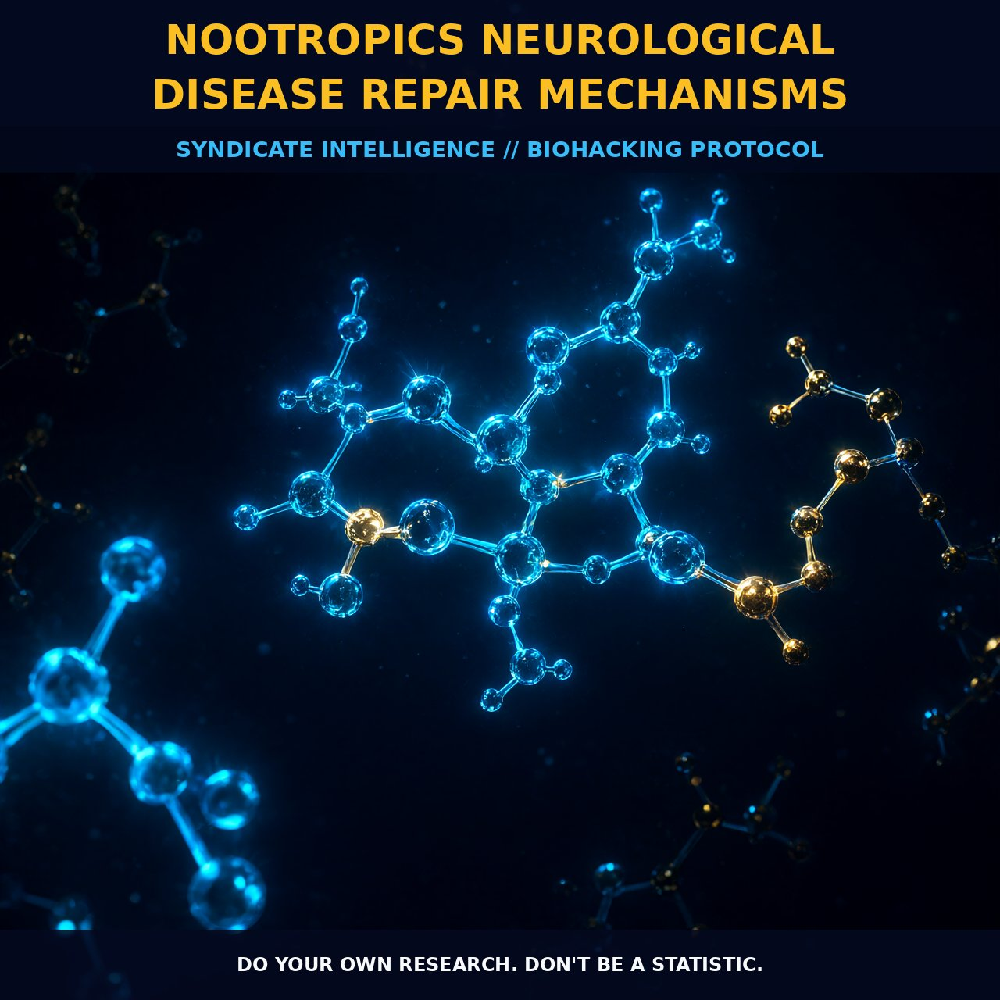

Nootropics Neurological Disease Repair Mechanisms

THE MECHANICS
The core of nootropic therapy for neurological repair lies in the modulation of neuroinflammation through precise biochemical signaling pathways. Current evidence indicates that Alzheimer’s disease pathogenesis is not isolated to neuronal degeneration but involves significant interactions with immunological mechanisms within the brain tissue. Misfolded and aggregated proteins bind directly to pattern recognition receptors on microglia and astroglia, triggering an inflammatory cascade that nootropics can effectively downregulate by supporting these cellular communication routes. This systemic approach allows therapeutic compounds to address the root biological drivers of cognitive decline rather than merely masking symptoms through temporary neurotransmitter enhancement.
Simultaneously, the repair process is heavily dependent on the stimulation of neurotrophic factors which serve as critical growth signals for neural survival and plasticity. Specific natural nootropics have been shown to stimulate the expression of Nerve Growth Factor (NGF) and Brain-Derived Neurotrophic Factor (BDNF), particularly within the hippocampus where memory processing occurs. These factors are responsible for maintaining the health of existing neurons while promoting the generation of new brain cells, a process that becomes increasingly vital as natural deterioration accelerates with age. The administration of these agents helps establish a robust signaling environment that supports long-term structural integrity and functional resilience in the face of neurological stressors.
BIOLOGICAL LEVERAGE
Nootropics leverage multiple biological systems to optimize brain energy metabolism and improve blood supply, creating an optimal substrate for cellular repair and maintenance. By increasing oxygen flow to the brain and enhancing circulatory efficiency, these compounds ensure that neurons receive the necessary resources to sustain high-level electrical activity and metabolic output. This vascular support works in tandem with improved neurotransmitter levels, particularly through choline derivatives which act as precursors for acetylcholine, thereby reducing the rapid deterioration of neural networks that characterizes aging and cognitive fatigue. The result is a synergistic effect where improved perfusion and enhanced signaling converge to sustain mental clarity and protect against neurodegenerative processes.
Furthermore, the biological leverage extends to the modulation of glutaminergic signaling and amyloid precursor protein processing, which are central to preventing the accumulation of toxic proteins associated with dementia. Natural nootropics help regulate these pathways by influencing the expression levels of key proteins that dictate synaptic health and cellular longevity. This regulation helps maintain the balance between excitatory and inhibitory signals, preventing the neural hyperexcitability that can lead to cellular damage over time. By targeting these specific molecular targets, nootropic compounds facilitate a state of physiological optimization where the brain’s natural repair mechanisms are amplified and its susceptibility to inflammatory and metabolic stress is reduced.
TACTICAL IMPLEMENTATION
When integrating nootropics into a regimen for neurological support, dosing strategy is paramount as efficacy correlates strongly with dose size, with underdosing being a frequent point of failure. Treatment protocols suggest maintaining consistent administration over a period of at least two to three weeks to allow the disturbance of consciousness or cognitive fatigue to fully resolve and for neuroprotective mechanisms to stabilize. It is advisable to select compounds that pass effectively through the blood-brain barrier to ensure they can reach and stimulate the responding intracellular mechanisms without significant peripheral degradation. This ensures that the therapeutic impact is delivered directly to the neural tissue where the repair and modulation processes are actively occurring.
Stacking considerations should focus on combining agents that target different aspects of the neurological repair cascade, such as pairing compounds that enhance NGF/BDNF expression with those that support blood circulation and oxygen delivery. Since nootropics must be used in conjunction with a healthy lifestyle to achieve optimum effects, the biological leverage is maximized when metabolic health is supported through diet and routine. Users should monitor their response to ensure they are achieving the desired increase in mental function without inducing instability, adjusting the stack composition to address specific individual needs such as memory retention, concentration stability, or mood regulation during the repair phase.
Do your own research. Don't be a statistic.
Prostar Life Hack
Stacking considerations should focus on combining agents that target different aspects of the neurological repair cascade, such as pairing compounds that enhance NGF/BDNF expression with those that support blood circulation and oxygen delivery.
[ AUTHOR: LEAD TECHNICAL RESEARCHER ]